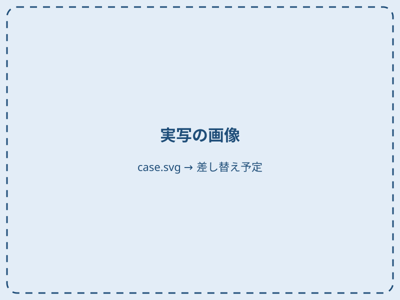
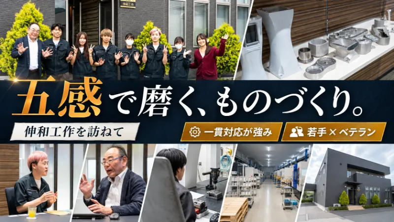
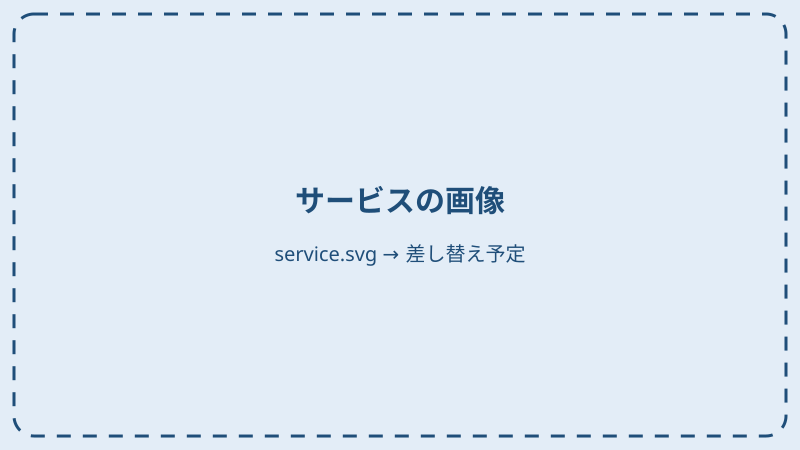
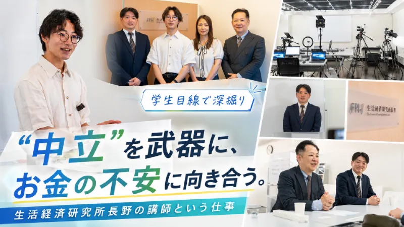
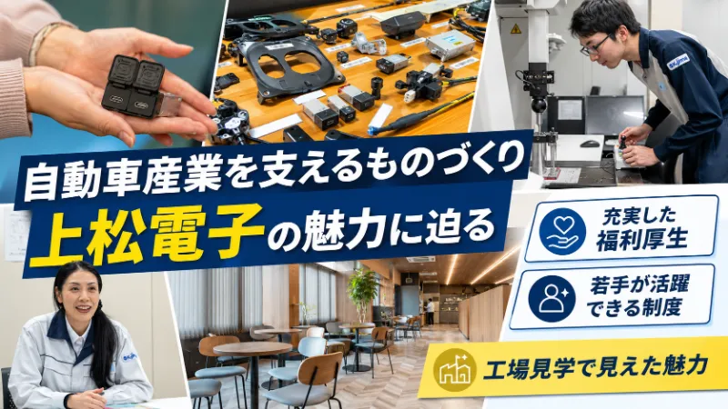
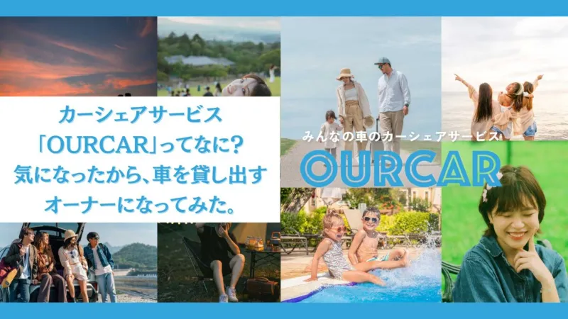

【要入力】企業名
-

ココロミーに記事を掲載
-
ココロミーのInstagramに掲載
-
オモモ会での交流
企業の方の声
【要入力】
ココロミー for Business
学生目線の取材・企画・情報発信で、これまで接点のなかった学生にも、企業の魅力を届ける年間広報・PRサービス。
Issues
ココロミー for Businessは、学生の興味を起点にした、新しい企業広報・PRのサービスです。
About
企業が伝えたいことを、学生が知りたいことへ。
ココロミー for Businessは、学生自身が企業を取材し、学生ならではの視点で魅力を発掘・発信する年間広報・PRサービスです。企業の想いや技術、働く人の姿を、Web記事やSNSなどを通して学生に届けます。
学生目線で企業の魅力を発掘
学生が興味を持つコンテンツに編集
Web記事やSNSなどで情報発信
ココロミーとは長野の学生ライターが取材・執筆する、学生向けのWebメディアとInstagramです。
Service
Web記事・ココロミーのInstagram・交流会を組み合わせた、1年間の広報・PRサービスです。
年2本
学生ライターが御社を取材し、学生の目線で書いた記事を、学生メディア「ココロミー」に掲載します。
得られるもの学生が書いた記事と、取材で撮影した写真。社内でも共有できます。
年2回
記事の内容を、ココロミーのInstagramアカウントで紹介します。御社のアカウントを運用するサービスではありません。
得られるもの記事を、Instagramを見ている学生の目に触れる場所へ。
月1回
学生と社会人が気軽に集まる交流会に、毎月ご招待します。
得られるもの学生と直接会って話し、考えや価値観を聞く機会。
項目にカーソルを合わせると、項目をタップすると、画像と説明が表示されます。

記事企画の例
企画は、企業ごとに学生ライターと一緒に考えます。

※ 具体的な提供回数・素材の利用条件は、最終仕様に合わせて記載します（未確定の部分は【要入力】）。
内容や進め方について、詳しくご説明します。
まずは相談してみるResults
ココロミーのWebメディアとInstagramが、長野でどのくらい見られているか。
※ PVはWebメディア全体の数値です。長野県内からのアクセスの割合は【要入力】
記事の掲載だけでなく、ココロミーのInstagramへの掲載、交流会での学生との出会いまで、1年間の取り組み全体をご紹介します。

ココロミーに記事を掲載
ココロミーのInstagramに掲載
オモモ会での交流
企業の方の声
【要入力】
学生ライターが実際に取材・執筆し、ココロミーに掲載した記事です。

生活経済研究所長野
“中立”を武器に、お金の不安に向き合う。生活経済研究所長野の講師という仕事
記事を読む（新しいタブで開きます）株式会社伸和工作
職人の五感と最新鋭技術が出会う。鋳物の一貫対応で日本のものづくりを支える「伸和工作」の現場を訪ねて
記事を読む（新しいタブで開きます）
上松電子株式会社
自動車産業を支えるものづくり。その背景には充実した福利厚生と教育体制が！地域に根付いた工場「上松電子」の魅力に迫る！
記事を読む（新しいタブで開きます）
株式会社ＴＲＩＬＬ
カーシェアサービス「OURCAR」ってなに？気になったから、車を貸し出すオーナーになってみた。
記事を読む（新しいタブで開きます）Use cases
掲載した記事や写真の、使い方の例です。
記事を社内で共有して、自社の仕事や大切にしていることを、社員どうしで改めて確かめるきっかけに。
学生の取材を通して、経営者の考えや思いを言葉にし、記事として残せます。
新しく入る人に会社を紹介するときの資料のひとつとして使えます。
大学の就職支援の場や授業で、会社を知ってもらう資料のひとつとして使うことを想定しています。
Flow & Schedule
公開した記事や投稿、交流会での出会いは、1年の中で積み重なっていきます。
例1年間の進み方の一例です。実際の時期は【要入力】
帯の矢印は、始まったものがその後も残り続けることを表しています。契約終了後の掲載の扱いは【要入力】
記事の企画や取材の日程を、学生ライターとご相談します。
学生ライターが企業・社員の方を取材し、写真を撮影します。
ご対応: 1回あたり 約【要入力】時間
公開前に、記事の内容をご確認いただきます。
ご対応: 公開前に 【要入力】回
ココロミーのWebメディアで公開し、ココロミーのInstagramでも紹介します。
企画の相談から記事公開までの進行は、ココロミーが担当します。企業さまにお願いするのは、取材へのご対応と原稿のご確認です。
Price
ココロミー for Business（年間契約のみ）
ご契約は年間契約のみです。お支払いは、月払いと年払いから選べます。
※ Instagram広告の広告費は、料金とは別にお支払いいただきます。
ココロミーへの記事掲載だけのご利用については、お問い合わせください。
お見積りや契約条件のご相談も、お気軽にどうぞ。
問い合わせるFAQ
年間契約です。お支払いは、月払い（月額40,000円・税込）と年払い（年額400,000円・税込）から選べます。最低契約期間など詳しい条件は【要入力】。
ココロミーへの記事掲載だけのご利用については、個別にご相談ください。お問い合わせフォームから承ります。
Instagram広告の広告費は、月額料金とは別にお支払いいただきます。目安は【要入力】。
【要入力】
年1回、実施内容をまとめたレポートをお渡しします。レポートでお伝えする項目は【要入力】。
【要入力】
Contact
サービスの詳細やお見積りなど、お気軽にご相談ください。
内容を確認のうえ、担当者よりご連絡いたします。
※ 現在はモックのため、実際には送信されていません。